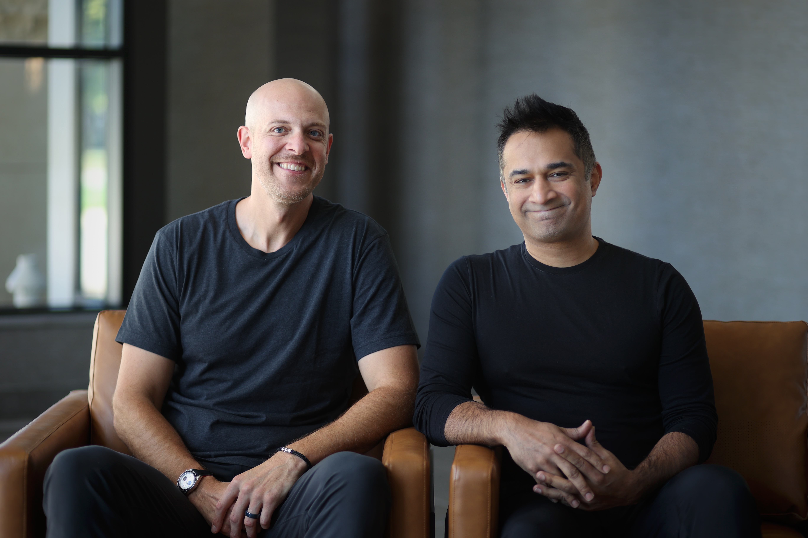
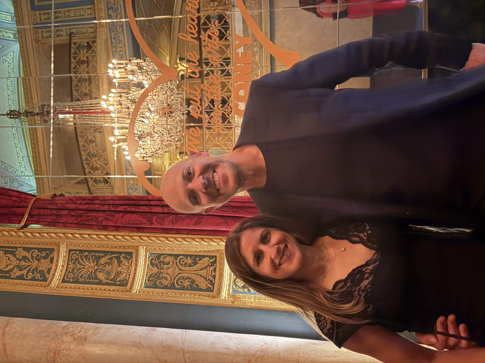

I have spent my career building the architecture, governance, and teams that let complex organizations operate at massive scale without losing sight of what matters.
That discipline started early. At Michigan State University, playing basketball for Tom Izzo and winning the 2000 NCAA National Championship taught me what daily championship habits actually look like when the pressure is real. After earning my undergraduate and law degrees at Michigan State, I practiced enterprise law at Troutman Pepper, solved operational problems across technology portfolio companies at Rock Ventures, and served as Executive Vice President, Chief Legal & Administrative Officer, and Board Secretary at United Wholesale Mortgage—helping take the business from private hyper-growth to the nation’s largest mortgage lender and a landmark public listing on the New York Stock Exchange.
Every one of those chapters came down to the same truth: high-stakes systems fail when complexity outpaces clarity. Chroneme applies that lesson where the stakes are highest. I am building it as Co-Founder and CEO alongside Zohaib Akhtar, whom I met while earning my MBA at Northwestern’s Kellogg School of Management.
Chroneme is an advanced clinical intelligence system powered by neuro-symbolic AI. Unlike black-box models that guess from patterns alone, it pairs deep learning with explicit clinical logic—so it notices early signals in a patient the way a great physician does, and shows its reasoning at every step. Across 124,000 patient encounters and active oncology early-detection trials, we are proving that clinical AI can be both extraordinarily capable and completely transparent.

With Zohaib Akhtar, my co-founderChroneme
Alongside Chroneme, I co-founded EASE Compliance Advisors, co-own Teton Group, and advise founders through Court Vision. Outside work, I live in Birmingham, Michigan with my wife of 23 years, Marissa, and our three children. When I’m not working, I’m usually training for the next HYROX race, logging early-morning miles, or out on the golf course.

With my wife, MarissaMichigan
Writing & Notes
Oct 2026 · Clinical AI · 6 min
What 124,000 patient encounters taught us about neuro-symbolic medicine
Most clinical AI models stall before they reach a second hospital because they memorize hospital workflows instead of reasoning through physiology. Here is what happens when you separate the two.
Sep 2026 · Scale & Governance · 4 min
Why regulated industries don’t have an AI problem—they have an auditability problem
Reflections from the Midwest Technology Summit on why healthcare and financial institutions cannot deploy systems that cannot explain their own decisions.
Building neuro-symbolic AI that combines deep pattern recognition with explicit medical logic, validated across 124,000 patient encounters and active health-system oncology collaborations.
Work · 02 of 04 · EVP, Chief Legal & Administrative Officer
United Wholesale Mortgage (NYSE: UWMC) — Hyper-growth to public scale
Led legal, governance, board administration, and operating subsidiaries through the company’s ascent to the #1 mortgage lender in the United States and its record-setting NYSE public listing.
Work · 03 of 04 · Co-Founder & Co-Owner
EASE Compliance Advisors, Teton Group & Court Vision
Co-founded EASE from inception as an independent regulatory compliance firm; co-own Teton Group with partner Timothy Pfund; and back disciplined operators through Court Vision.
Work · 04 of 04 · Foundation
Rock Ventures, Troutman Pepper, Kellogg & Michigan State
Executive problem solving across Rock Ventures portfolio companies (StockX, Bedrock, JACK Entertainment), corporate practice at Troutman Pepper, MBA at Northwestern Kellogg, JD and BA at Michigan State University, and 2000 NCAA National Champion under Coach Tom Izzo.